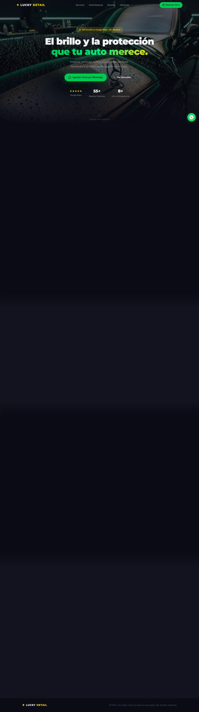
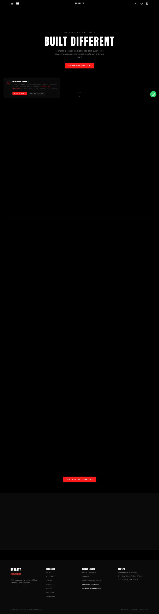
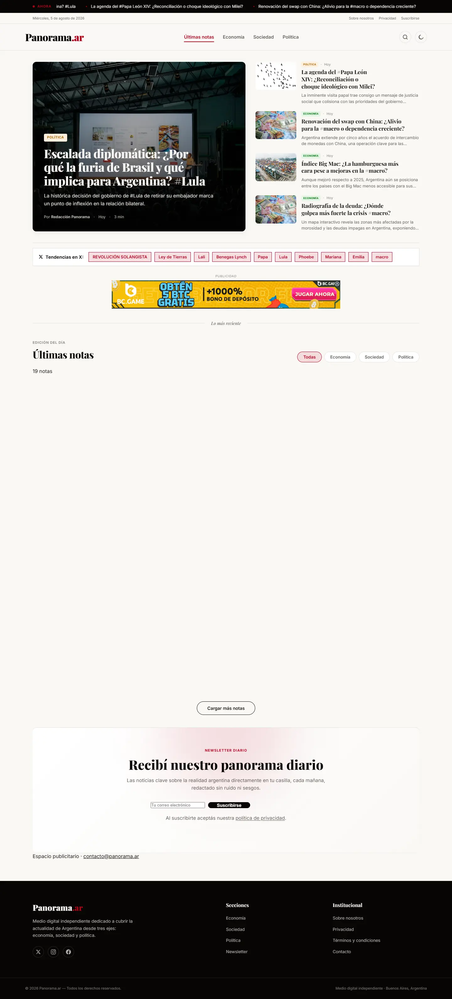
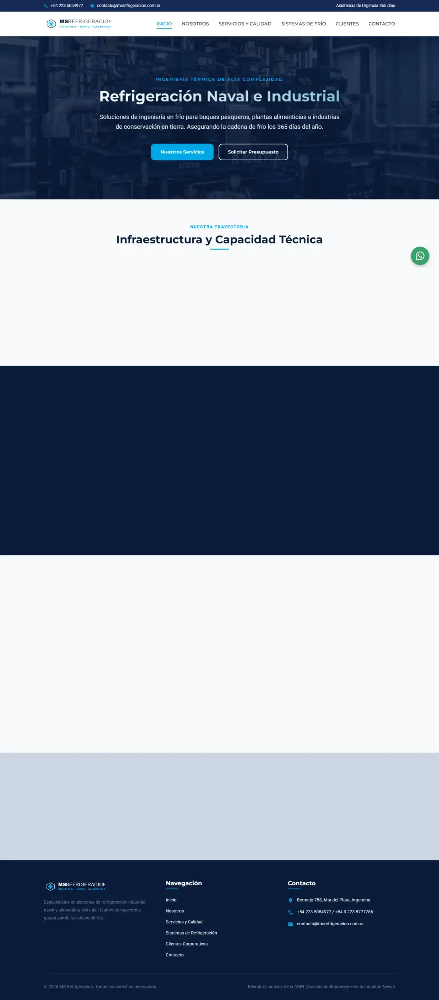
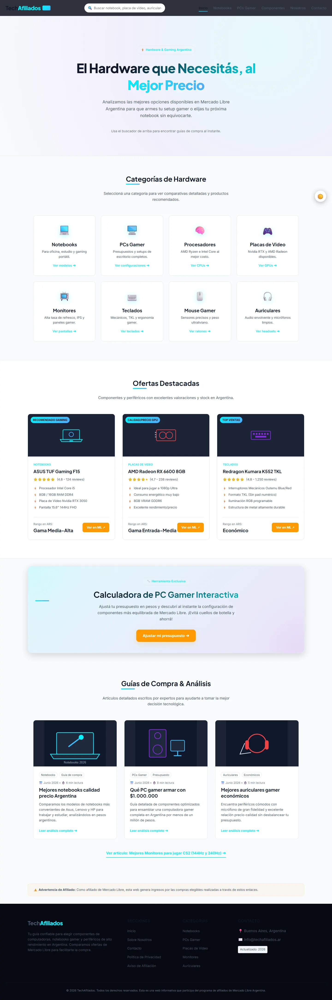

Soluciones reales
construidas con IA
Cada proyecto es una combinación de arquitectura sólida, inteligencia artificial integrada y una experiencia de usuario cuidada al detalle.

GestiónComercial
SaaS de stock, ventas y cuentas corrientes para PyMEs
Plataforma SaaS diseñada para kioscos, almacenes, ferreterías y dietéticas. Control de stock en tiempo real, punto de venta (POS), reportes de ganancias, fiados con historial completo y un asistente con IA que responde consultas sobre el negocio en lenguaje natural.
- Asistente con IA — Chat integrado que consulta el stock, registra productos y responde preguntas del negocio directamente en el panel.
- Punto de Venta (POS) — Ventas con múltiples productos en segundos: efectivo, tarjetas y transferencias. El stock se descuenta solo.
- Reportes de Ganancias — Ventas del día, del mes y ganancia real calculada sobre el precio de costo.
- Cuentas Corrientes — Fiado de clientes con historial completo de deudas y pagos.
- PWA Instalable — Instalable en el celular del comercio con funcionamiento offline, pensado para el mostrador.

Lucky Detail
Estética vehicular premium — cliente real en Mar del Plata
Sitio web para un taller de detailing con 5/5 estrellas en Google Maps. Presenta servicios de lavado premium, corrección de pintura, cerámicos y limpieza de interiores con slider antes/después interactivo, reseñas reales de clientes y reserva de turnos directa por WhatsApp.
- Antes/Después Interactivo — Sliders comparativos que muestran la transformación real de los vehículos.
- Reserva por WhatsApp — Botón de turno con mensaje prearmado en cada servicio y botón flotante siempre visible.
- Social Proof Real — Sección de reseñas con calificación 5/5 de Google Maps y contador de reseñas animado.
- SEO Local — Meta y Open Graph optimizados para búsquedas de detailing en Mar del Plata.
- Ubicación y Horarios — Mapa embebido de Google, horarios y medios de pago en una sección completa.

Dynasty.ar
Tienda online de tech & gadgets con estética CRT
E-commerce completo construido sobre Next.js 16: catálogo con filtros por categoría, carrito persistente y un checkout que envía el pedido armado por WhatsApp — productos, envío, descuento por transferencia y total — para que la venta se cierre en segundos sin pasarela.
- Checkout por WhatsApp — El pedido completo se arma automáticamente y se envía al WhatsApp del local para confirmación directa.
- Carrito con Zustand — Estado global con persistencia, suma de cantidades inmutable y cuotas calculadas con la misma función que el resto del sitio.
- Catálogo con Categorías — Filtros sincronizados con la URL (?category=) y búsqueda sin recargar la página.
- Calculadora de Envío — Cálculo de costo de envío con umbral de envío gratis según zona.
- SEO Técnico — Metadata dinámica, Open Graph, tipografía de marca propia y páginas legales (envíos, contacto, devoluciones).

Panorama.ar
Portal de noticias argentino con actualización automática
Portal de noticias sobre economía, sociedad y política argentina, desplegado y corriendo en Vercel. Un scraper con Playwright actualiza las noticias de forma automática a un JSON, y el sitio las renderiza con ticker de última hora, buscador client-side y modo oscuro/claro.
- Actualización Automática — Script Node.js con Playwright que scrapea noticias y las publica sin intervención manual.
- Ticker de Última Hora — Barra informativa en tiempo real con pausa al hacer hover.
- Buscador Client-Side — Filtrado instantáneo por categoría, término o fecha sin recargar la página.
- Dark / Light Mode — Tema persistente en localStorage con transiciones suaves.
- SEO Completo — Sitemap XML generado por script, robots.txt y artículos optimizados por categoría.

MS Refrigeración
Sitio corporativo para empresa de refrigeración en Mar del Plata
Sitio web profesional multi-página para una empresa con más de 10 años en refrigeración industrial, naval y gastronómica. Optimizado con SEO técnico y datos estructurados LocalBusiness, botón de WhatsApp flotante para emergencias 24/7 e integración con n8n para captar y notificar leads de contacto en tiempo real.
- SEO Local con Schema.org — JSON-LD LocalBusiness, Open Graph, canónicas y mapa del sitio XML para posicionar en búsquedas locales.
- Multi-Página Profesional — Inicio, servicios, industrias, clientes, sobre nosotros y contacto con navegación fluida.
- WhatsApp Flotante — Contacto directo con mensaje predefinido, ideal para emergencias de frío 24/7.
- Automatización n8n — Workflow que notifica los formularios de contacto y da seguimiento a leads en tiempo real.
- Responsive y Veloz — Diseño adaptativo con tipografía fluida y rendimiento optimizado.

ml-afiliados-tech
Portal de contenido tech con SEO avanzado y herramientas client-side
Portal de afiliados de tecnología enfocado en el mercado argentino: artículos de compra (auriculares gamer, monitores para CS2, notebooks calidad-precio, armado de PC por presupuesto) con SEO on-page completo y herramientas útiles en JavaScript puro: comparador de productos, calculadora de presupuesto y command palette.
- 8 Categorías + Artículos SEO — Contenido optimizado por keyword con sitemap.xml y robots.txt.
- Comparador de Productos — Herramienta client-side para comparar specs y precios lado a lado.
- Calculadora de Presupuesto — Arma una PC gamer según el presupuesto disponible en ARS.
- Command Palette — Navegación rápida estilo IDE con atajo de teclado y tema oscuro/claro.
- Compliance — Política de privacidad, descargo de responsabilidad y página de contacto incluidas.